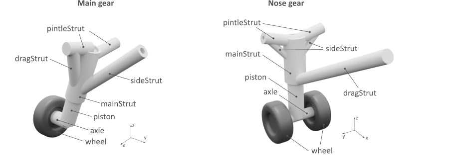

complexType · sequence
Assembly of landing gear components
Describes an assembly of the various landing gear components

| Name | Type | Constraints | OccurrenceHow often the element may appear at this place. The schema writes it as minOccurs and maxOccurs on the declaration. | Default | Description |
|---|---|---|---|---|---|
| sequenceThe children below must appear in exactly this order. Each may repeat as often as its own occurrence allows. | |||||
mainStrut | strutType | [1..1] required | Main strut | ||
piston | pistonType | [1..1] required | Piston | ||
| choiceExactly one of the alternatives below may appear, unless the occurrence next to this line says otherwise. | |||||
axle | axleType | [1..1] required | Axle | ||
bogie | bogieType | [1..1] required | Bogie | ||
dragStrut | strutAssemblyType | [0..1] optional | Drag strut (Assumption: one end of the strut will connect to the main strut and the other end will be given as endPoint) | ||
pintleStruts | pintleStrutsType | [0..1] optional | Pintle struts | ||
sideStruts | sideStrutsType | [0..1] optional | Side struts | ||
mainActuator | mainActuatorType | [0..1] optional | Main actuator | ||
cpacs/vehicles/aircraft/model/landingGears/landingGear/componentAssemblycpacs/vehicles/rotorcraft/model/landingGear/noseGears/noseGear/componentAssemblycpacs/vehicles/rotorcraft/model/landingGear/mainGears/mainGear/componentAssemblycpacs/vehicles/rotorcraft/model/landingGear/skidGears/skidGear/componentAssembly| Type | Name |
|---|---|
landingGearBaseType | componentAssembly |